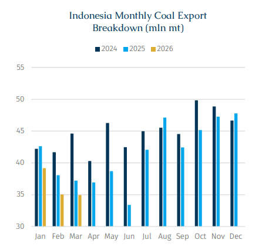
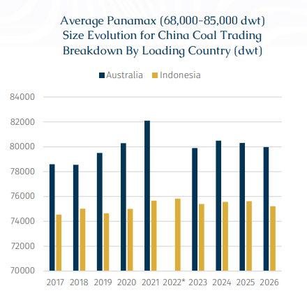
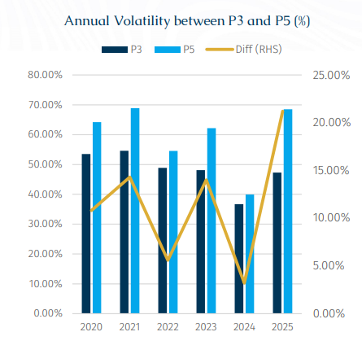
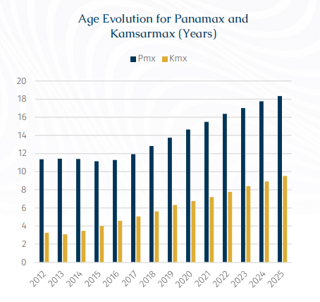

Following recent strength in the Panamax Pacific market, corresponding freight indices have rebounded sharply, building on the strong momentum observed earlier this year. As of 17 April, P3_82 (Australia-China) and P5_82 (Indonesia-China) closed at $18,323/day and $17,633/day, respectively, 16% and 19% above their early-April lows.
Since the start of 2026, both routes have delivered substantial gains, rising 99% and 148% from end-2025 levels. While the overall upward trend has been significant across both routes, the divergence in performance has become more pronounced. In particular, P5 has posted a notably stronger increase this month, clearly outperforming P3 over the same period and leading to a further narrowing of the spread between the two routes.
The most immediate driver of P5’s relative outperformance has been the recovery in Indonesian coal exports. As RKAB approvals accelerated in April, mining activity previously constrained by government policy was released, supporting a rebound in regional coal shipments. This has directly underpinned the P5 route, which is closely linked to Indonesian export flows. In 1Q26, Indonesia’s coal exports totalled 109.1 mln mt, down 7.4% y-o-y and marking the third consecutive annual decline following the country’s export peak in 2024.

However, recent changes in Indonesia’s RKAB policy can only explain the recent freight fluctuations at a surface level as opposed to the underlying dynamics. The current market divergence has brought to light structural shifts that have been developing for some time but have not previously received sufficient attention. Beyond short-term movements in the cargo list, the more important development is the deeper reconfiguration of functional roles within the Panamax market.
Although P3 and P5 fall within the same Baltic-Exchange-defined segment - both notionally benchmarking an 82,500 Dwt Kamsarmax on different routes - the underlying commercial realities differ materially.
According to AXSMarine data, China’s Panamax coal imports from Indonesia in 2025 were carried by vessels with an average age of 20.5 years and an average size of 75,616 Dwt, broadly consistent with traditional 76,000 Dwt Panamax tonnage. By contrast, cargoes from Australia were transported by significantly younger and larger vessels, averaging 9.6 years in age and 80,304 Dwt—much closer to modern Kamsarmax specifications.
(*Note: Data for Australia in 2022 is not applicable, as there were no Australian coal imports into China following import restrictions introduced in late 2021)

In other words, rather than simply reflecting regional pricing differences for comparable assets, P3 and P5 are increasingly indicative of two distinct vessel classes being priced separately by the market: assets that differ in cargo intake, fuel efficiency, route suitability, and trade exposure.
Historically, the market did not fully appreciate the extent to which traditional (older) Panamax vessels depended on Indonesian coal exports. One key reason was that, prior to the export peak in 2024, Indonesian volumes remained consistently high, providing a stable and increasing flow of regional cargo. This sustained demand offered long-term employment for older Panamax tonnage and effectively masked the concentration risk arising from their narrower trade exposure.
However, earlier this year, concerns over tighter RKAB approvals temporarily disrupted this balance. As expectations for Indonesian exports became less certain, the reliance of traditional Panamax vessels on a single trade flow was quickly exposed, leading to visible pressure on earnings. In this sense, the episode served as a stress test, highlighting differences in adaptability and demand resilience across the broader Panamax fleet.
Beyond short-term market movements, historical volatility data also highlights the structural differences between the two vessel groups represented by P3 and P5. On an annual basis, P5 has consistently exhibited higher volatility than P3, with the gap widening in recent years. In 2025, based on the annualized standard deviation of daily returns, full-year volatility for P5 reached 68.5%, exceeding P3 by 21.2%, the largest differential since the indices were launched.
This pattern suggests that the market environment for traditional Panamax tonnage is becoming increasingly sensitive, particularly during periods of weaker demand.

During softer market conditions, Kamsarmaxes tend to be more competitive, supported by superior fuel efficiency, higher cargo intake, and greater trade flexibility (preferred for grains trades and Atlantic requirements etc). In contrast, older Panamax tonnage is more likely to become marginal capacity when demand weakens, with employment pressure feeding more directly into P5 earnings.
In other words, downside pressure is not distributed evenly across the Panamax segment. An increasing share of that pressure is effectively transferred onto older, depreciated assets through charterer preferences, fleet deployment strategies, and cargo selection dynamics.
As a result, the relationship between P3 and P5 is no longer simply a reflection of the freight spread between two routes; it increasingly represents a redistribution of risk within a more clearly stratified Panamax market. With sharper tiering across the segment, even when traditional Panamax vessels achieve strong spot earnings, their heavier reliance on a dominant commodity/route and higher volatility imply persistent risk for owners. Pricing differentials within the segment can therefore no longer be explained solely by vessel age or straightforward depreciation.

This shift also suggests that investment decisions involving older Panamax vessels, or ageing tonnage more broadly, require greater caution. For modern vessels, valuation can still be anchored within a long-term cyclical asset framework. In contrast, older ships with shorter remaining lifespans and more limited commercial flexibility tend to rely more heavily on the durability of specific regional fundamentals. In the case of older Panamax vessels, the stability of Indonesian coal trade flows may be more critical than the broader direction of the market. Should Indonesian fundamentals weaken on a sustained basis, particularly alongside continued deliveries of Kamsarmax tonnage, older Panamax vessels could increasingly face scrapping pressure, with their share in the Indonesian trade gradually displaced by relatively older Kamsarmax vessels.